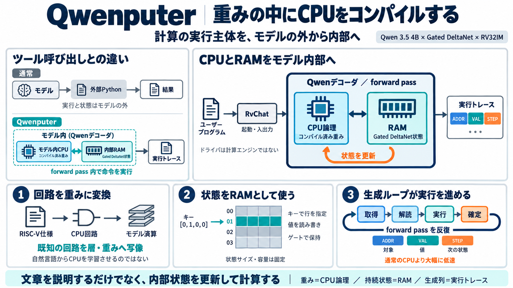

モデル → 外部Python → 結果
モデルはコードや引数を生成し、サンドボックスやAPIが計算します。実行主体と状態はモデルの外側です。
LLM
→
Python
→
Result

Model as Machine
Qwenputerは、RISC-V計算機とRAMをQwenの内部構造へ埋め込み、forward passの最中に命令を実行する実験です。
中心的な主張は、Pythonサンドボックスを呼ぶことではありません。計算の実行主体そのものを、モデル外部から重み内部へ移すことです。
Execution Boundary
通常のツール利用では計算を外部環境へ委託します。QwenputerはCPU論理と作業メモリをモデル内に置き、forward pass内で進めます。
モデルはコードや引数を生成し、サンドボックスやAPIが計算します。実行主体と状態はモデルの外側です。
CPU回路はコンパイル済み重み、RAMはGated DeltaNet状態です。RvChatは起動・入出力を仲介しますが、計算エンジンではありません。
Prerequisite Map
新規性は単独の技術ではなく、生成モデル・線形RNN状態・連想記憶・CPU仕様を接続した点にあります。
入力と既生成列から、次に出すトークンの確率を計算します。
注意機構の代わりに、更新可能な行列状態を時系列で保持します。
one-hotキーとクエリにより、状態内の特定行を選択します。
命令、レジスタ、演算、メモリ動作を定義する契約です。
Token Generation
forward passは、現在の入力から次トークン分布を計算する一回の通過です。生成では、その通過をトークンごとに繰り返します。
Persistent State
Gated DeltaNetは、過去のキーと値を行列状態へ圧縮しながら更新する線形RNN系の仕組みです。
状態行列の寸法は、コンテキスト長とともに増え続けません。
キーに応じて、状態の一部へ値を関連付けます。
ゲートにより、情報を残すか忘れるかを調整します。
State as Memory
one-hotキーが行番号を一意に選び、書き込み強度とゲートが上書き・保持を制御します。曖昧な類似検索ではなく、明示アドレスとして使える設計です。
k = [0,1,0,0,0] なら行01を指定。βを上書きに適した強度へ設定し、新しい値を格納します。
q = [0,1,0,0,0] により、同じ行の値を選択的に取り出します。
不要な減衰を抑え、命令間でレジスタ値やメモリ内容を残します。
長文とともに伸びませんが、利用できる行数と値幅は設計時に固定されます。
Addressed Operations
アドレス、値、命令境界を表すトークンが、内部状態への操作を明示します。
メモリアドレスや対象レジスタを選び、one-hotキー／クエリへ対応させます。
格納する値、または読み出した結果をトークン化し、状態更新へ接続します。
命令の終了を示し、プログラムカウンタや次の内部状態へ進みます。
Circuit Compilation
CPU仕様として定義した論理を、注意ヘッド、FFN、DeltaNetヘッドなどの層断片へ変換します。
Tokens as Trace
CPUの各状態遷移は、意味を割り当てられたトークン列としてデコードされます。文章生成の時間軸が、そのまま命令実行の時間軸になります。
トークン列の意味解釈がDeltaNet状態を更新し、レジスタ、RAM、プログラムカウンタを前進させます。
Whole System
外部ドライバは入力を整えますが、命令の意味処理とメモリ更新はコンパイル済みモデル内部にあります。
Instruction Contract
RISC-Vの32-bit整数命令を基礎に、乗除算と追加演算を扱う構成です。単なる四則演算器より、プログラム実行に近い仕様を狙っています。
レジスタ演算、分岐、ロード／ストアなど、32-bit CPUの基礎です。
整数乗算、除算、剰余を追加し、数値処理の範囲を広げます。
Web上のプロジェクト説明では、Zba拡張を含む構成とされています。
bignumコプロセッサも追加され、大きな整数の処理を補助します。
Reported Validation
プロジェクトは、公式テスト、参照実装との一致、長時間実行、出力再照合を報告しています。数値は独立再現ではなく、公開説明に基づきます。
Numerical Reliability
言語モデルが桁列を推測する代わりに、内部CPUが定義済みの命令意味論で計算します。数値ベンチでは、外部Python利用時と同等または近い改善が報告されています。
通常の生成では、計算結果も次トークン予測です。桁数や分布外入力で誤りやすくなります。
加算、乗算、分岐、メモリ操作をCPU仕様に沿って進め、途中状態を保持します。
提供資料には全ベンチの条件や詳細数値がなく、汎用性の判断には追加再現が必要です。
Beyond Working Memory
Qwenputerは、ハッシュでスロットを選ぶファイル保存操作も試しています。状態を引き継ぐ構成では、会話をまたぐ事実保持率が改善したと報告されています。
キーと内容をスロットへ格納。
既存内容へ情報を追加。
キーから保存内容を取得。
利用中の項目を列挙。
指定項目を無効化。
名前をハッシュし、格納先を決定。
内部状態を演算の作業領域だけでなく、名前付き情報を後から取得する基盤として扱う方向性です。
Memory Models
KVキャッシュ、DeltaNet RAM、外部データベースは、伸び方・アドレス方式・永続性が異なります。
Tool Boundary
両者とも計算精度を補えますが、信頼境界、状態の所在、監査方法が変わります。
Operational Friction
研究としての独創性と、一般利用に耐える性能は別評価です。現状はサイズ、速度、起動方法、評価範囲に制約があります。
一命令に数decoded tokensを使うため、CPUとしてのスループットは低くなります。
一般的なgenerate()だけで、すべての起動・入出力を扱う設計ではありません。
大規模プログラム、例外、境界条件、長期状態運用の全容は未確定です。
Evidence Boundary
成果は「具体的な計算機をモデル内に構成できる」という存在証明を強くします。しかし、汎用性や安全性まで自動的に証明するものではありません。
Gated DeltaNet状態を、明示的にアドレス指定できるRAMとして設計できる。
CPU回路をモデル層へ変換し、実行トレースを生成列として進められる。
RV32IMテスト、QEMU照合、長時間フルランによる検証方針が示された。
多様な計算・推論タスクへ、同じ信頼性で一般化できるか。
大規模プログラム、複雑な制御フロー、長期運用で安定するか。
敵対的入力や状態悪用を含む状況で、監視器として安全に機能するか。
Safety Implications
内部CPUは監視や再現性の新しい足場になり得ます。同時に、コンパイラ、状態、入出力規約という新しい攻撃面も生みます。
アドレス更新、命令境界、レジスタ遷移が明示されれば、自然言語推論より監査しやすい可能性があります。
入力、ドライバ、状態復元、重み、コンパイラのうち、攻撃者が触れられる範囲を定義する必要があります。
未監査の状態領域、ハッシュ衝突、トレース外の経路、観測不能な中間表現を検証すべきです。
Research Agenda
価値を確定するには、動作デモから、効率・網羅性・攻撃耐性・透明性を測る段階へ進む必要があります。
命令あたりのトークン数、実時間、消費電力、重み増加量を外部CPUと比較する。
例外、境界値、長時間プログラム、複雑な分岐、メモリ圧力を含めて再現する。
敵対的入力、状態汚染、ドライバ改変、隠れチャネルに対する挙動を測る。
回路から層への対応、コンパイラの正当性、配布重みの再生成可能性を公開する。
Balanced Verdict
Qwenputerは、モデルを「計算について話すもの」から「内部で計算機を動かすもの」へ押し広げます。現時点では製品機能より、検証可能な内部計算を研究する基盤として読むのが妥当です。
内部状態、回路コンパイル、形式的監視の研究対象として価値が高い。
命令トークン削減、並列化、多様なプログラム評価が次の焦点。
内部実行という構造だけで、改ざん耐性や監視可能性は保証されない。
Sources & Scope
本デックは提供された要約・論点・Web検索メモを圧縮したものです。プロジェクト報告の数値は、独立再現済みの事実と区別して記述しています。
プロジェクト／GitHubリポジトリの説明。CPU論理の重みへの直接埋め込み、RV32IM、Zba、bignum、ライセンス情報の一次参照。
ベースモデル、デコーダ構造、Gated DeltaNetを含むモデル側の技術的前提。
線形RNN状態、ゲート付き更新、キー・クエリによる連想記憶を理解するための技術的背景。
32-bit整数命令、M拡張、レジスタ・メモリ・制御フローの意味論を定めるISA参照。
RISC-V実装の命令動作を確認するテスト群。Qwenputerの適合性主張に使われたとされる評価基盤。
実行結果の照合対象となるエミュレータ。Qwenputer側の状態遷移との一致が報告されている。
``` @software agrawal2026qwenputer author{Agrawal, Divyansh}{} title{{Qwenputer}: a computer compiled into the weights o…
Most of the time when people say an AI model can "run" something, they mean it generated code that then runs somewhere e…
Qwen hands a multiplication to the RISC-V CPU inside its own weights; the CPU's RAM is Gated DeltaNet state Qwen hands …
Qwen3.5 is an AI model released by Qwen on Monday, Feb 16 2026, 13 days after Qwen3-Coder-Next. It is an open-weight mod…
The “gated” component adds two learned, input-dependent gates: a decay gate that controls how much of the previous state…